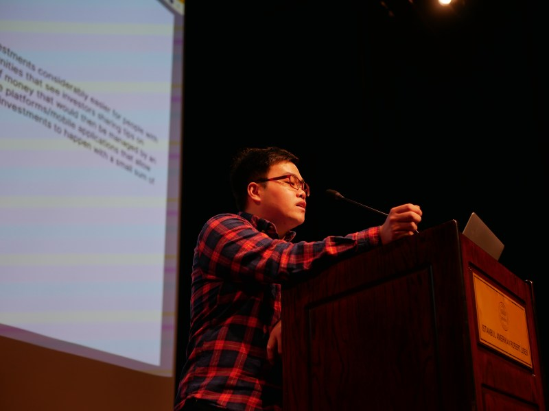

Benjamin Goh
Historian of education · History & Social Studies teacher, Singapore
I am a historian of education. I study how education policy takes shape, and the social, cultural, economic, political and historical contexts behind it. My main topics are sex education, history education and the liberal arts. I also work on historiography, global history and the history of Southeast Asia.
My research has appeared in History of Education Quarterly and Itinerario. I host interviews for the New Books in History podcast. I teach History and Social Studies at a secondary school in Singapore and plan to start doctoral study in the history of education.
I came to academia as a first-generation, lower-income student from Singapore. This site covers my research and my teaching practice.
Education
-
Postgraduate Diploma in Education, 2025
National Institute of Education, Nanyang Technological University, Singapore -
MPhil in World History, 2023
University of Cambridge (Wolfson College), UK -
BA (Hons) in History, Minor in Urban Studies, 2022
Yale-NUS College, Singapore